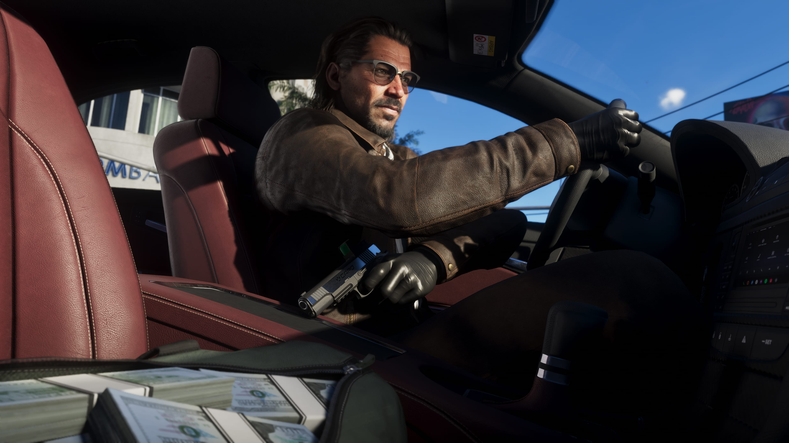
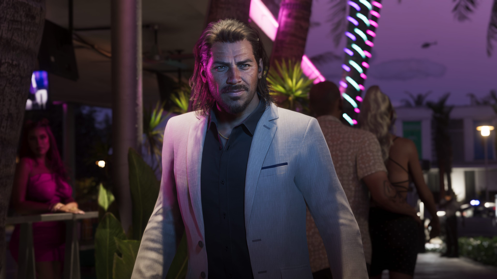

Experiência
Raul possui experiência no planejamento e execução de grandes roubos.
Raul Bautista é um experiente ladrão de bancos apresentado oficialmente para Grand Theft Auto VI.
Confiante, carismático e acostumado com grandes roubos, Raul procura pessoas dispostas a assumir riscos maiores em busca de recompensas ainda maiores.
Raul Bautista é apresentado como um veterano no mundo dos grandes roubos.
Sua experiência como ladrão de bancos o coloca em uma posição diferente de criminosos que ainda procuram construir reputação ou aprender como executar operações de maior escala.
Raul demonstra confiança naquilo que faz e procura oportunidades cada vez mais ambiciosas.
Para ele, quanto maior o risco, maior pode ser a recompensa — uma filosofia que também pode colocar qualquer equipe em situações perigosas.
A especialidade de Raul são operações de grande porte, especialmente roubos a bancos.
A apresentação oficial enfatiza sua experiência e sua capacidade de encontrar talentos dispostos a participar de trabalhos de alto risco.
Isso sugere um personagem acostumado a trabalhar com equipes e a organizar operações que exigem mais do que pequenos crimes oportunistas.
Os detalhes sobre quais roubos terão participação de Raul, porém, dependem de confirmação dentro da história de GTA VI.

Raul procura pessoas que estejam dispostas a aumentar o nível das operações.
Sua abordagem está diretamente associada à ideia de assumir riscos maiores para alcançar recompensas maiores.
Essa ambição pode tornar Raul uma conexão valiosa para criminosos interessados em grandes oportunidades, mas também representa um perigo.
A própria apresentação do personagem deixa claro que operações cada vez mais arriscadas podem elevar as apostas até o ponto em que tudo pode sair do controle.

Raul possui experiência no planejamento e execução de grandes roubos.
Sua apresentação mostra um personagem seguro de suas capacidades e de sua experiência.
Raul procura operações de alto risco em busca de recompensas igualmente grandes.
Imagens oficiais de Raul Bautista divulgadas para Grand Theft Auto VI.
Somente informações apresentadas oficialmente para o personagem.
Raul é apresentado oficialmente como um experiente ladrão de bancos.
Ele possui experiência em operações criminosas de grande porte.
Raul procura talentos dispostos a participar de seus trabalhos.
Seu objetivo envolve trabalhos capazes de oferecer recompensas maiores.
Raul está disposto a aumentar os riscos para aumentar as recompensas.
Sua busca por apostas maiores pode colocar suas operações em situações perigosas.
As informações desta página são baseadas em materiais oficiais publicados pela Rockstar Games.
Página oficial de GTA VI com informações sobre os personagens e o estado de Leonida.
Rockstar GamesApresentação oficial de Raul Bautista e dos demais personagens de Grand Theft Auto VI.
Ver fonte oficial